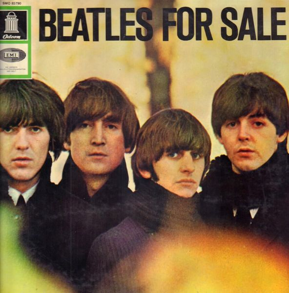

BEATLES FOR SALE

El cuarto álbum de The Beatles, publicado el 4 de diciembre de 1964 por la compañía discográfica Parlophone.
El álbum se había grabado en siete días, repartidos entre agosto y octubre, cuando el programa de la banda estaba repleto de actuaciones en el Reino Unido, Canadá y los Estados Unidos, así como en el trabajo de radio y televisión.
El album constituye de 14 temas que acontinuacion se muestran.